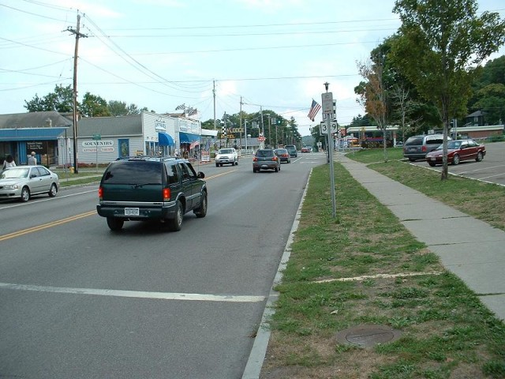
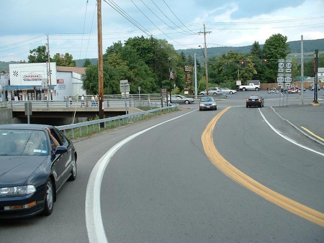
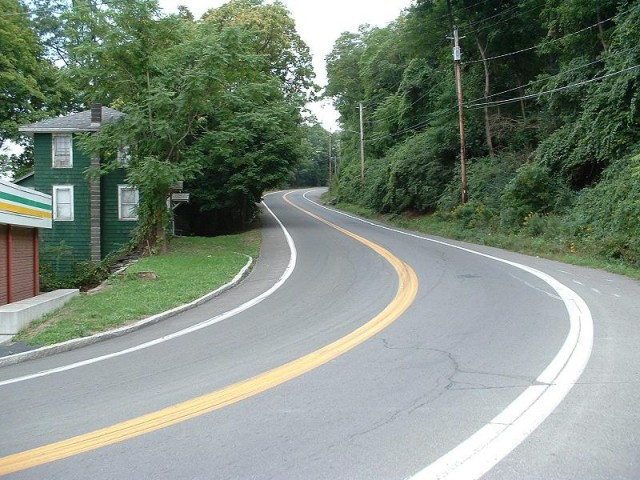
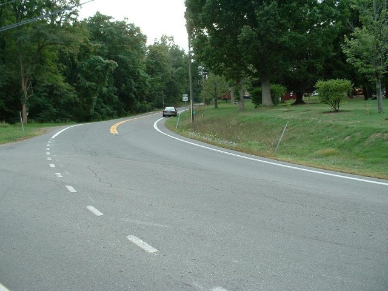
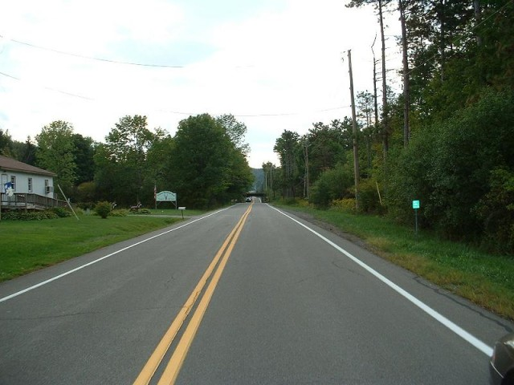
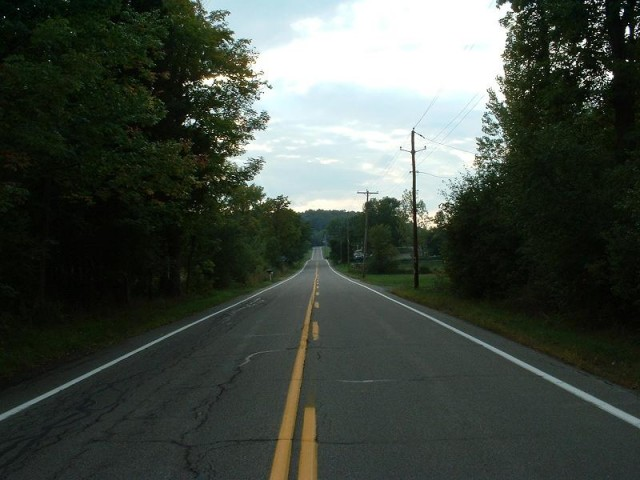

Numbers on the map represent the location where the photographs were taken. Click links above to view the photographs.
Watkins Glen - Start Line, Old Corning Hill, Townsend Road, White House 'S' & Underpass.
|| Contents || Start to Underpass | School House & Stone Bridge | Archy Smiths to Friars | Big Bend to Finish || Home ||
Numbers on the map represent the location where the photographs were taken. Click
links above to view the photographs.
Return to racingcircuits.net's Photo Archive Main Index

01 - Front Straight with finish line across road.

02 - Looking back at Turn 1.

03 - Old Corning Hill.

04 - Townsend Road Bend.

05 - White House 'S'.

06 - Underpass Straight, underpass ahead beneath crest.

07 - Underpass Straight Continued.

08 - End of Underpass Straight.
Photographs and Text ©Cullen Noonen. Reproduced here with kind permission.